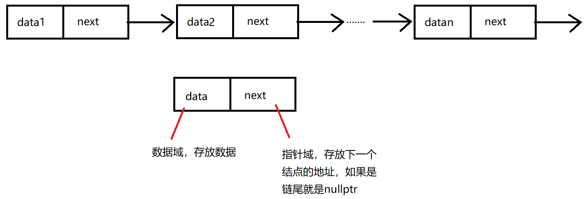
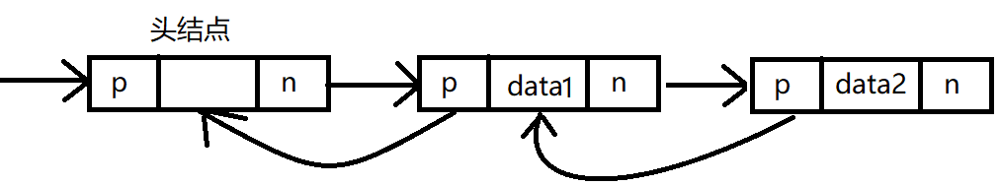

2.3 线性表的链式表示
顺序表可以随时存取表中的任一一个元素，它的存储位置可以用一个简单直观的公式表示，但是出入和删除操作需要移动大量元素。链式存储线性表时，不需要使用地址连续的存储单元。不要求逻辑上相邻的元素物理上位置也相邻。因此插入和删除操作不需要移动元素，只需要修改指针。但是查询只能沿着链一个一个查找，查询性能就降低了。
2.3.1 单链表的定义
线性表的链式存储又称单链表。

单链表结点代码结构
template<class t>
class LNode {
public:
t data; // 数据域
LNode<t> *next; // 指针域
public:
LNode(t e):data(e), next(nullptr){}
};
单链表可以解决顺序表需要大量连续存储单元的缺点（数组并不需要为其下标开辟存储空间），但是单链表附加指针域，也存在浪费存储空间的缺点。单链表的元素离散分布在存储空间中，是非随机存取的存储结构。不能直接定位某个特定的结点，只能从表头沿着链域一个一个的遍历。
带头结点：通常用头指针来标识一个链表，如单链表L，头指针为NULL时表示一个空表。为了操作上的方便，在单链表第一个结点之前附加一个结点，称为头结点，结点的data不存数据。
链表结构
template<class t>
class LinkList {
private:
LNode<t>* phead; // 头指针
LNode<t>* ptail; // 尾指针
public:
LinkList(); // 初始化
void Insert(t e);
bool Insert(int i, t e);
LNode<t>* GetElem(int i); // 按序号查找结点
LNode<t>* LocateElem(t e); // 按值查找结点
bool Delete(int i); // 按序号删除结点
size_t GetLength(); // 求表长
};
template<class t>
inline LinkList<t>::LinkList()
{
// 创建头结点，结点不存内容。
phead = new LNode<t>();
ptail = phead; // 尾指针指向头结点
}
2.3.2 单链表上基本操作的实现
插入操作
/// <summary>
/// 尾部插入新的结点
/// </summary>
/// <param name="e">数据</param>
template<class t>
void LinkList<t>::Insert(t e)
{
// ptail 永远不为空，因为有头结点
ptail = ptail->next;
ptail = new LNode<t>();
ptail->data = e;
ptail->next = nullptr;
}
查找操作
按序号查找结点值
在单链表中从第一个结点出发，顺着指针 next 域逐个往下搜索，直到找到第i个结点为止，否则返回最后一个结点指针域NULL。
template<class t>
inline LNode<t>* LinkList<t>::GetElem(int i)
{
if (i < 1) // i的值不能小于1
return nullptr;
int j = 1;
LNode<t>* temp = phead->next; // 获取将头指针的next
// 沿着链找到对应位置的结点
while (temp && j < i)
{
temp = temp->next;
j++;
}
return temp;
}
按值查找表结点
从单链表的第一个结点开始，由前往后依次比较表中各结点数据域的值，若某结点数据域的值等于给定值e，则返回该节点的指针；若整个单链表中没有这样的结点，则返回NULL。
template<class t>
inline LNode<t>* LinkList<t>::LocateElem(t e)
{
LNode<t>* temp = phead->next;
while (temp && temp != e)
{
temp = temp->next;
}
return temp;
}
插入新结点
插入结点操作将值为x的新结点插入到链表的第i个位置上。先检查插入位置的合法性，然后找到待插入位置的前驱结点，即第 i-1 个结点，再在其后插入新结点。
/// <summary>
/// 按位置插入法。
/// </summary>
/// <param name="i">插入的位置</param>
/// <param name="e">插入的结点数据</param>
/// <returns>true，插入成功；false，插入失败</returns>
template<class t>
inline bool LinkList<t>::Insert(int i, t e)
{
if (i < 1)
return false;
LNode<t>* p = GetElem(i - 1);
if (p)
return false;
LNode<t>* temp = new LNode<t>();
temp->data = e;
temp->next = p->next; // 原链表中第i个位置的元素，可能为空，由新元素的next指向
p->next = temp;
if (temp->next == nullptr) // temp的next是空指针，则temp是个尾部结点
ptail = temp;
}
删除操作
删除结点操作是将单链表的第i个结点删除。先检查删除位置的合法性，后查找表中第 i-1 个结点，即被删结点的前驱结点，再将其删除。
template<class t>
inline bool LinkList<t>::Delete(int i)
{
LNode<t>* p = GetElem(i - 1); // 找到第i-1个位置结点
if (p || p->next) // 第i-1个位置的结点为空或者第i个位置结点为空，删除失败
{
return false;
}
LNode<t>* pnext = p->next;
p->next = pnext->next; // 将第i-1个结点的next域指向第i个结点的next域
delete pnext;
if (p->next == nullptr) // 删除的i结点时ptail，则需要修改ptail的指向
ptail = p;
return true;
}
求表长
求表长，不算头结点。
template<class t>
inline size_t LinkList<t>::GetLength()
{
int len = 0;
auto current = phead; // 获取头指针
while ( current && ptail != current)
{
len++;
current = current->next;
}
return len;
}
2.3.3 双链表
单链表结点中，只有一个指向其后继的指针，使得单链表只能从头结点依次顺序地向后遍历。要访问某个结点的前驱结点（插入、删除操作时），只能从头再遍历，访问后继结点的时间复杂度为O(1)，访问前驱结点的时间复杂度为O(n)。
双链表结点中有两个指针 prior 和 next，分别指向其前驱结点和后继结点。

双链表结点代码结构
template<class t>
class LNode {
private :
t data; // 数据域
LNode<t>* next; // 后继结点的指针域
LNode<t>* pre; // 前继结点的指针域
};
双链表在单链表道德结点中增加了一个指向其前驱的 prior 指针，因此双链表中的按值查找和按位查找的操作与单链表相同。不同的是在插入和删除操作上，需要额外对前继结点指针域进行操作。
双链表的插入操作
尾部插入
// 在链表尾部插入新结点
template <class t>
void LinkList<t>::Insert(t e)
{
LNode<t>* temp = new LNode<t>(e);
temp->pre = ptail; // 将新结点的前继指针指向原链表中的tail指向的结点
ptail->next = temp; // 将链表原结点的尾结点的next指针指向新插入的结点
ptail = temp; // 尾指针移到最后一个结点
}
按序号插入
/// <summary>
/// 按位置插入法。
/// </summary>
/// <param name="i">插入的位置</param>
/// <param name="e">插入的结点数据</param>
/// <returns>true，插入成功；false，插入失败</returns>
bool LinkList<t>::Insert(int i, t e)
{
if(i < 1) // 序号不能小于1
return false;
// 找到第 i-1个位置的结点
LNode<t>* pi = GetElem(i - 1);
if(pi) // 如果第i-1个结点不存在，插入失败，
return false;
LNode<t>* t = pi->next; // 插入前第i个结点
LNode<t>* temp = new LNode<t>(e); // 申请新结点
pi->next = temp; // 将新结点插入链表
temp->pre = pi;
if(ptail == pi) // 如果第i-1个结点时链表尾结点，则移动尾结点
{
ptail = temp;
}
else // 第i-1个结点不是尾结点
{
t->pre = temp;
temp->next = t;
}
return true;
}
删除结点
// 按位删除结点
template <class t>
void Delete(int i)
{
LNode<t>* pi = GetElem(i - 1); // 获取第i-1个结点
if(!pi || !(pi-next)) // 第i-1个结点不存在或者第i个结点不存在，程序结束
return;
if(pi->next)
LNode<t>* t = pi->next->next; // t 指向第 i+1个结点
delete pi->next; // 释放第i个结点的空间
if(t == nullptr) // 删除后第i+1个结点不存在，那第i-1个结点就成为了尾结点，需要将尾指针移动到对应的位置
{
ptail = pi;
}
else
{
pi->next = t;
t->pre = pi;
}
}